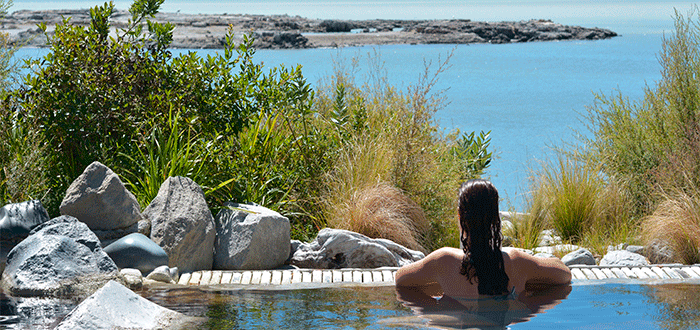
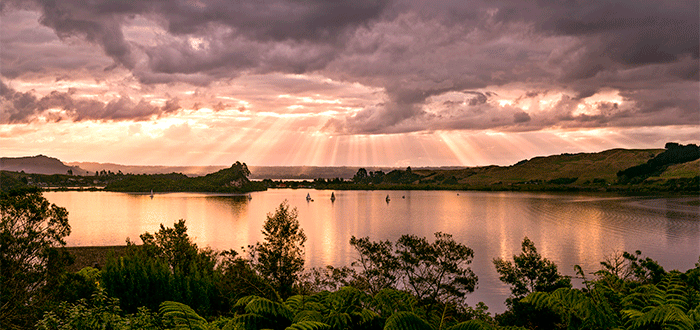
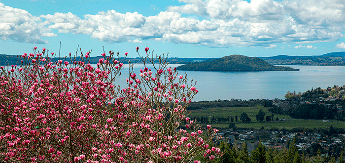
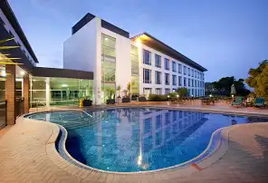

Rotorua
Rotorua se encuentra en el corazón de la Isla Norte, a solo 60 kilómetros al sur de Tauranga, a 80 kilómetros al norte de Taupo, 105 kilómetros al este de Hamilton, y 230 kilómetros al sureste de la ciudad más poblada del país, Auckland.
Rotorua tiene una población estimada de 56 200 habitantes, por lo que es la décima mayor área urbana del país. El Distrito de Rotorua tiene una población total estimada de 68 600 habitantes, de los cuales 3600 viven en la región de Waikato.
Rotorua es un importante destino para los turistas nacionales como internacionales; la industria del turismo es con mucho, la mayor industria en la zona. Es conocida por su actividad geotérmica, y cuenta con géiseres -es notable el géiser Pohutu en Whakarewarewa- y piscinas de lodo caliente. Esta actividad termal proviene de la caldera de Rotorua, en la que se encuentra la ciudad. Rotorua es la sede del Instituto de Tecnología de Waiariki
Tiene una superficie total de : 2614.9 km²
En 1962 fue declarado como ciudad y después se convirtió en un distrito en 1979.

Clima
En Rotorua, los veranos son cómodos, los inviernos son fríos y mojados y está parcialmente nublado todo el año. Durante el transcurso del año, la temperatura generalmente varía de 4 °C a 24 °C y rara vez baja a menos de -1 °C o sube a más de 27 °C.
En base a la puntuación de turismo, la mejor época del año para visitar Rotorua para actividades de tiempo caluroso es desde principios de Enero hasta finales de Febrero.
Economia
La economía de Rotorua es el turismo.
Lugares Turisticos
Polynesian Spa
Es un spa geotérmico de baja profundidad, construido a orillas del lago Rotorua. Dicen que es un punto imperdible si visitas la ciudad. Polynesian Spa cuenta con 28 piscinas de distintas temperaturas, para todas las condiciones físicas y edades. La de más alta temperatura bordea los 42 grados, por eso se recomienda ir de menor a mayor para así acostumbrarse a lo caliente del agua. Además de piscinas termales, en las instalaciones es posible encontrar zonas de descanso, familiares y de cafetería. Se recomienda ir durante la mañana ya que en este horario podrás encontrar menos afluencia de público en el spa.
Sin duda uno de los puntos más fuertes de este lugar es el paisaje, bellísimo y muy sereno, lo que contribuye con el ambiente de relajación de las aguas termales. Antiguamente los maoríes locales consideraban que estas aguas tenían beneficios terapéuticos por lo que son bastante valoradas en la zona.
Lago Rotorua
El lago Rotorua es el segundo lago más grande de la isla norte de Nueva Zelanda y se encuentra en la región de la Bahía de Plenty. Su historia es particular ya que este lago es en realidad el cono de un volcán formado tras una erupción masiva hace unos 200.000 años. Tras esto se generó una caldera circular que se llenó de agua y que dio origen a lo que hoy se conoce como el lago Rotorua. A momentos se puede sentir olor a azufre en su superficie.
En el centro del lago se encuentra la isla Mokoia, el escenario de una bella historia de amor entre la hija de un jefe de tribu muy influyente y un joven con mucha destreza en las armas, pero sumamente pobre. El cuento de Hinemoa y Tutanekai se puede escuchar hasta el día de hoy en visitas guiadas por la isla, donde ahondarán en cada uno de los aspectos de este famoso relato Maorí.
Si paseas por la orilla del lago podrás observar algunos cisnes negros, algunas gaviotas y coloridas flores locales. Un punto importante: el lago es solo para admirarlo. Por donde vayas encontrarás carteles indicando que no debes bañarte, y la historia del lago lo deja muy claro. Es hermoso pero peligroso.
Isla Mokoia
Esta pequeña isla, de solo 1,35 kilómetros cuadrados, se encuentra ubicada en el lago Rotorua y es conocida principalmente por ser el hogar de una de las leyendas más famosas de Nueva Zelanda, la historia de amor entre Hinemoa y Tutanekai. Sin embargo, su nombre actual hace alusión a un guerrero maorí a quien le fue incrustado un palo de excavación (ko) a través de uno de sus tatuajes (moko). De ahí el nombre, Isla Mokoia.
Esta isla se encuentra deshabitada y actualmente es de particular interés entre geógrafos, ya que en realidad corresponde a una cúpula de lava de riolita que se ha elevado a 180 metros sobre la superficie del lago. Asimismo, esto ha significado la formación de manantiales geotérminos en las playas costeras de la isla. Uno de ellos es el estanque Hinemoa.
En isla Mokoia podrás realizar caminatas, recorrer los alrededores de la isla en crucero, tomar un baño termal o incluso plantar tu propio árbol, una forma de conmemorar la visita y ayudar en la replantación de especies nativas en la isla.
Hoteles
Holiday Inn Rotorua
Hotel de 4 estrellas.
Este hotel tranquilo se encuentra a un minuto a pie de Whakarewarewa - The Living Maori Village, y a 4 km del parque Kuirau y del Redwoods Treewalk.
El precio por dia es 4894 UYU.
Numero de contacto: +64 7-348 1189
YHA Rotorua Backpackers

Hotel de 5 estrellas.
Este albergue informal está situado en el centro de la ciudad, a 1 minuto a pie de una parada de autobús, a 14 minutos a pie del Polynesian Spa y a 13 km del lago Okareka.
El precio por dia es 1849 UYU
Numero de contacto: +64 7-349 4088
VR Rotorua Lake Resort

Hotel 4 estrellas
Este hotel de lujo, ubicado en una casa de madera frente al lago con jardín, se encuentra a 16 km del parque geotérmico y cultural Te Puia.
El precio por dia es 2694 UYU
Numero de contacto : +64 7-362 4599.